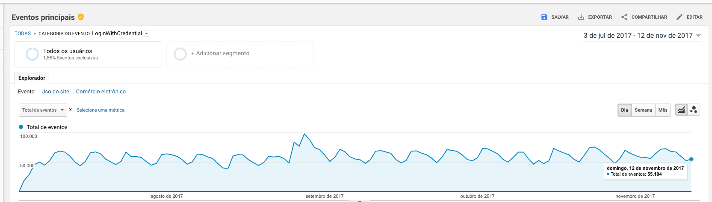
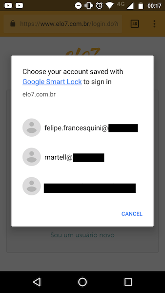

Credential Managament API
Publicado em:
@tcelestino
Hoje em dia passamos muito tempo em redes sociais, fóruns, blogs e sites de comércio eletrônico, sabemos então o quanto é chato ter que ficar anotando dados de login e senha deste serviços. E como você sabe, por questões de segurança, não devemos usar os mesmos dados para acessar diferentes serviços. Para resolver este problema, existem diversas aplicações que gerenciam essas informações, como: LastPass, 1Password, bitwarden, Dashlane, entre outros. Os principais navegadores do mercado também possuem recursos para fazer esse gerenciamento. Mas daí surge uma dúvida: como faríamos para informar estes dados ao navegador? É possível integrar meu sistema de login ao mesmo? Para elucidar essas questões (e se existem outras, pode deixar nos comentários logo abaixo), lhe apresento a Credential Management API, que pelo próprio nome já diz, faz o gerenciamento de suas credenciais (login e senha) utilizando o navegador. No momento, apenas a versão do Chrome para desktop e Android possui a API implementada. Acredito que em breve a veremos em outros navegadores.
A Credential Management API segue três pilares:
- Permite acesso com um toque com o seletor de contas;
- Salva e gerencia seus dados;
- Simplifica o fluxo de acesso.
Existem diversas maneiras de melhorar o fluxo de utilização do seu site com a Credential Managament API. Um exemplo seria facilitar o processo de login automático, caso o usuário tenha múltiplas contas registradas em seu navegador.
Como usamos no Elo7
Antes de mostrar a implementação da API, queria exemplificar como a utilizamos aqui no Elo7.
Utilizamos a Credential Management API no sistema de login do Elo7 (na versão web mobile) e analisando os resultados através do Google Analytics, observamos que realmente nossos usuários utilizam este recurso, independente do seu nível de conhecimento.

Interessante os resultados, não? Bom, vamos deixar de conversa e partir para o melhor, que é a implementação!
Implementando a API
Como grande maioria das API’s Javascript lançadas hoje em dia, precisamos garantir a segurança das informações. Ou seja, para usar a Credential Management API você precisa ter um servidor com uma conexão segura. Em outras palavras, é necessário que o protocolo https esteja habilitado em seu servidor.
A primeira coisa que precisamos verificar é se esta API está disponível em seu navegador. Importante: nos exemplos a seguir utilizarei algumas das novidades recém adicionadas à linguagem Javascript (ES6/ES7/ES8). Caso não conheça, você pode conhecer mais clicando aqui.
No exemplo a seguir, utilizaremos um formulário com os seguintes campos:
<form id='login' method='POST' action='/auth/login'>
<fieldset>
<label>Email: <input type='email' name='name'></label>
<label>Senha: <input type='password' name='pass'></label>
</fieldset>
<input type='submit' value='Logar'>
</form>
'use strict';
if ('credentials' in navigator) {
const form = document.forms.login;
form.addEventListener('submit', () => {
let cred = await navigator.credentials.create({
password: {
id: form.elements[0].value, // campo de email
password: form.elements[1].value // campo de senha
}
});
navigator.credentials
.store(cred)
.then(() => console.log('Dados foram salvos com sucesso'))
.catch(() => console.log('Seus dados não foram salvos'));
});
}
No código acima, estamos criando uma credential de forma assíncrona quando é feito um submit no formulário, no qual passamos para este as informações preenchidas nos campos (email e senha). Feito isso, chamamos o método navigator.credentials.store(), passando como argumento/parâmetro o objeto que criamos com navigator.credentials.create(). Esse método retornará uma Promise. Caso você não saiba o que é uma Promise, recomendo ler a documentação disponível no Mozilla Developer Network (MDN). Vale lembrar que, caso aconteça o catch o usuário irá logar no sistema, apenas as informações (email e senha) não serão gravadas.
Recentemente a Google atualizou diversas características desta API, adicionando novas maneiras de criar uma credential. Agora ela pode ser criada de forma síncrona ao instanciar o objeto PasswordCredential ou de forma assíncrona utilizando o método navigator.credentials.create(). Para maiores detalhes, leia aqui.
Requisitando as informações
Assim como salvamos, também podemos recuperar informações que já foram salvas. Para isso, vamos usar o método navigator.credentials.get(). Esse método retornará as informações que salvamos anteriormente no método navigator.credentials.store(). Caso não exista nenhuma informação, será retornado um null. Ou seja, você pode criar uma abordagem que faça o usuário cadastrar as informações caso o valor seja null, por exemplo.
'use strict';
if ('credentials' in navigator) {
//...
// recuperando dados caso já estejam existentes
navigator.credentials.get({
password: true,
mediation: 'silent'
}).then((cred) => {
if (cred) {
// faça alguma coisa
}
});
}
Como podem observar, passamos para o navigator.credentials.get() duas informações:
- password: por padrão, o valor é
false, por isso é preciso passar o valortruepara recuperar informações; - meditation: você pode passar as seguintes opções:
- silent: não exibe a opção de múltiplas escolhas. Pode ser considerado como
true; - optional: exibe a escolha de múltiplas contas. Pode ser considerado como
false; - required: sempre exibe a interface de de múltiplas contas.
- silent: não exibe a opção de múltiplas escolhas. Pode ser considerado como

Podemos usar diversas abordagens, inclusive integrando com serviços de autenticação de terceiros como o Google Sign-In e Facebook Login. Para isso, existe o federated, no qual podemos informar qual serviço será o fornecedor desses dados. Leia mais aqui.
Agora, vamos alterar o código para melhorar o fluxo do usuário caso ele tenha diversas contas. Lembrando que isso é um exemplo e você pode criar a sua própria abordagem a partir das necessidades de seu projeto.
'use strict';
if ('credentials' in navigator) {
//...
navigator.credentials.get({
password: true,
mediation: 'silent'
}).then((cred) => {
// caso já exista as credenciais
if (cred) {
// será repassada essas informações para a função que irá trata-las.
login(cred);
} else {
// não existindo as credenciais, obtemos a partir do navigator.credentials.get()
navigator.credentials.get({
password: true,
mediation: 'optional'
}).then((cred) => {
if(cred) {
login(cred);
}
}).catch((e) => console.error(e));
}
}).catch((e) => console.error(e));
}
Você pode ter percebido que adicionamos uma função chamada login em nosso código. Mas o que vamos ter nela? Como sabe, precisamos fazer o usuário logar em nosso sistema, logo precisamos fazer uma requisição para o nosso sistema. Na nossa função, teriamos a seguinte implementação
var login = (cred) => {
'use strict';
if (cred) {
let form = new FormData();
form.append('email', cred.id);
form.append('password', cred.password);
// simula uma rota de autenticação em nosso sistema
fetch('/auth/login', {
method: 'POST',
credentials: 'include',
body: form
}).then(res => {
// caso tenha sucesso, será redirecionado para uma rota. No caso, a página inicial
if (res.status === 200) {
window.location = '/';
// em caso de erro, enviamos para uma rota que irá tratar o erro
} else {
window.location = '/auth/error';
}
}).catch((e) => console.error(e));
} else {
// implementa um fallback caso o cred não tenha as infos necessárias
};
}
No código acima, passamos para a função login o objeto cred que será usado no nosso back-end para autenticar os dados do usuário. Fazemos essa requisição AJAX usando a Fetch API, no qual recebemos uma Promise no qual podemos implementar nossa lógica.
Melhorando nosso código de obtenção das credenciais, podemos usar a função login caso o usuário já possua suas credenciais salvas ou não.
navigator.credentials.get({
password: true,
mediation: 'silent'
}).then((cred) => {
if (cred) {
login(cred);
} else {
navigator.credentials.get({
password: true,
mediation: 'optional'
}).then((cred) => {
login(cred);
}).catch((e) => console.error(e));
}
}).catch((e) => console.error(e));
Agora que sabemos como salvar e obter os dados salvos com a Credentinal Management API e integrá-la a um sistema próprio de autenticação, também podemos garantir o logout do usuário em nosso sistema. Para isso, vamos usar o método navigator.credentials.requireUserMediation(). Leia mais sobre aqui.
document.querySelector('.logout').addEventListener('click', (evt) => {
if ('credentials' in navigator && navigator.credentials.preventSilentAccess) {
navigator.credentials.preventSilentAccess();
}
evt.preventDefault();
window.location = '/auth/logout';
});
Com isso, garantimos que o usuário não “logará” automaticamente quando fizer um novo acesso ao sistema.
Conclusão
A Credential Management API é uma solução que melhora bastante a usabilidade do processo de autenticação dos usuários, agilizando e mantendo as informações de forma segura. A idéia é que ela se torne muito mais interessante quando for futuramente implementada pela maioria dos navegadores existentes no mercado.
Em caso de dúvidas, críticas e mais dicas de como implementar a API, fique livre para deixar o seu comentário. :)